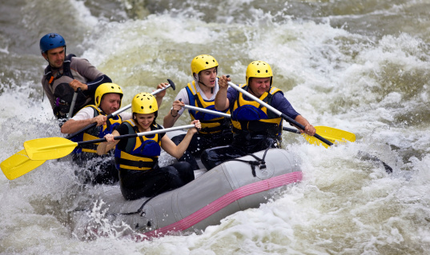
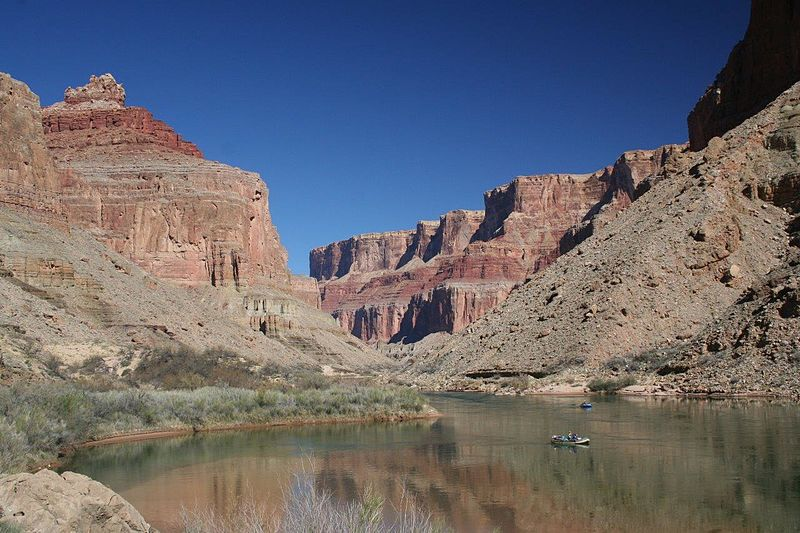

Welcome to Dry Oar Customer Service!


● Here, we treat our customers like family, and such, you will be our top priority. We pride ourselves on our customer service, and we are more than willing to answer any question or concerns that you might have about us and our company.
● You can contact us using the following resources: our emails are abc123@byui.edu and abc123@gmail.com.
● Feel free to call us at (208)xxx-xxxx we will be happy to answer any questions that you might have about the reservation process. Our oppperating hours are from 9:00am. to 7:30pm.
● Please remember to follow us on our social media accounts and check for any updates on your trips. We will alway have current, up-to-date information regaurding any changes that might occur.
● Rest assured that we will take full resposibility for any changes that might happen. We offer full refunds for any reservation cancelled up to a 72 hour notice; we know life happens. Thank you for your time. We appreciate you.
Join Us
Contact Us
● Here, we treat our customers like family, and such, you will be our top priority. We pride ourselves on our customer service, and we are more than willing to answer any question or concerns that you might have about us and our company.
● You can contact us using the following resources: our emails are abc123@byui.edu and abc123@gmail.com.
● Feel free to call us at (208)xxx-xxxx we will be happy to answer any questions that you might have about the reservation process. Our oppperating hours are from 9:00am. to 7:30pm.
● Please remember to follow us on our social media accounts and check for any updates on your trips. We will alway have current, up-to-date information regaurding any changes that might occur.
We are here for you
● Rest assured that we will take full resposibility for any changes that might happen. We offer full refunds for any reservation cancelled up to a 72 hour notice; we know life happens. Thank you for your time. We appreciate you.